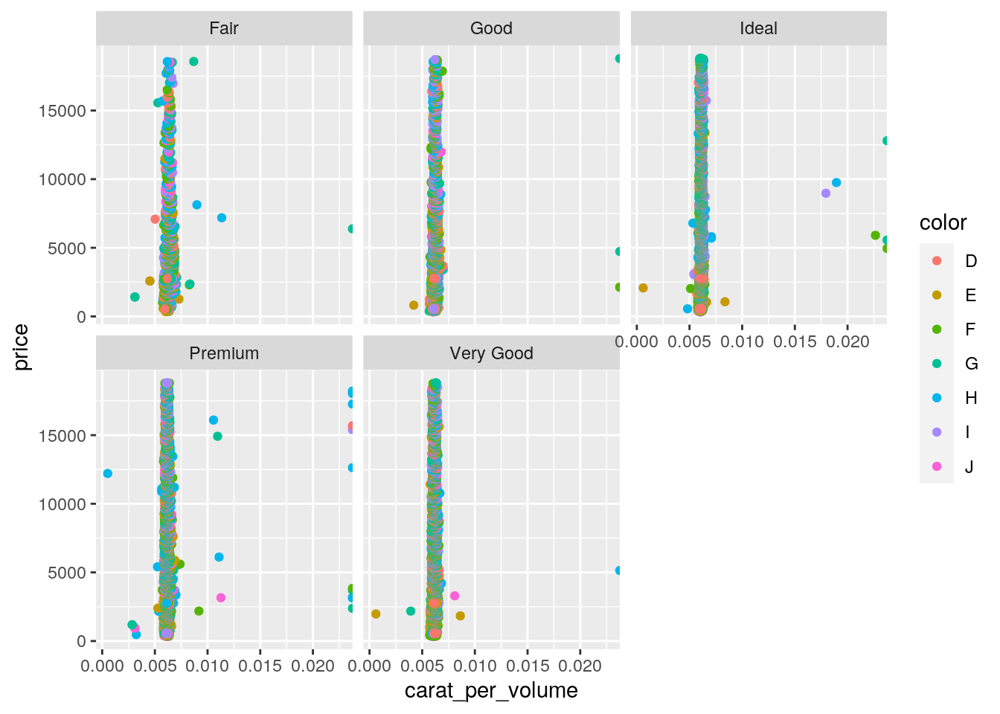

December 6, 2020
If you have ever lingered on stack exchange, you have likely come across the great debate between R and Python amongst coders. Some say that R is just not enough when it comes to machine learning, but others would lay their life down for its visualization capabilities in ggplot. Some people absolutely love the cleanliness of python code, while others cannot get over the difficulty of regex. You know what I say, why not both!? 
I will show you how to use both R and python in the same script using the package: reticulate. I will manipulate the infamous diamonds dataset in python and plot the data in R to prove that not only can these languages speak to each other, but they can perform various tasks with high efficiency to achieve one goal. The purpose of this post is to highlight the desired capabilities of both R and python, showing that we truly do need both of them.
library(reticulate)
library(tidyverse)Python:
In the next few chunks I will manipulate the diamonds dataset in python. Manipulation in python is extrememly simple and can be done with just a few lines of code. The syntax is similar to dplyr in R, but it takes a lot less lines of code to do what you want in python. This is a desirable characteristic of python, and is just one reason as to why some use python over R for data manipulation.
import matplotlib.pyplot as plt
import seaborn as sns
import numpy as np
import pandas as pd
import seaborn as sns
df = sns.load_dataset('diamonds')Making new variables:
#volume of the diamond variable made: mm^3
df2=df.assign(size = df['x']*df['y']*df['z'])
#new carat per volume variable:
df3=df2.assign(carat_per_volume = df2['carat']/df2['size'])
df3
#df3 will be the new dataset moving forward.## carat cut color clarity depth table price x y z \
## 0 0.23 Ideal E SI2 61.5 55.0 326 3.95 3.98 2.43
## 1 0.21 Premium E SI1 59.8 61.0 326 3.89 3.84 2.31
## 2 0.23 Good E VS1 56.9 65.0 327 4.05 4.07 2.31
## 3 0.29 Premium I VS2 62.4 58.0 334 4.20 4.23 2.63
## 4 0.31 Good J SI2 63.3 58.0 335 4.34 4.35 2.75
## 5 0.24 Very Good J VVS2 62.8 57.0 336 3.94 3.96 2.48
## 6 0.24 Very Good I VVS1 62.3 57.0 336 3.95 3.98 2.47
## 7 0.26 Very Good H SI1 61.9 55.0 337 4.07 4.11 2.53
## 8 0.22 Fair E VS2 65.1 61.0 337 3.87 3.78 2.49
## 9 0.23 Very Good H VS1 59.4 61.0 338 4.00 4.05 2.39
## 10 0.30 Good J SI1 64.0 55.0 339 4.25 4.28 2.73
## 11 0.23 Ideal J VS1 62.8 56.0 340 3.93 3.90 2.46
## 12 0.22 Premium F SI1 60.4 61.0 342 3.88 3.84 2.33
## 13 0.31 Ideal J SI2 62.2 54.0 344 4.35 4.37 2.71
## 14 0.20 Premium E SI2 60.2 62.0 345 3.79 3.75 2.27
## 15 0.32 Premium E I1 60.9 58.0 345 4.38 4.42 2.68
## 16 0.30 Ideal I SI2 62.0 54.0 348 4.31 4.34 2.68
## 17 0.30 Good J SI1 63.4 54.0 351 4.23 4.29 2.70
## 18 0.30 Good J SI1 63.8 56.0 351 4.23 4.26 2.71
## 19 0.30 Very Good J SI1 62.7 59.0 351 4.21 4.27 2.66
## 20 0.30 Good I SI2 63.3 56.0 351 4.26 4.30 2.71
## 21 0.23 Very Good E VS2 63.8 55.0 352 3.85 3.92 2.48
## 22 0.23 Very Good H VS1 61.0 57.0 353 3.94 3.96 2.41
## 23 0.31 Very Good J SI1 59.4 62.0 353 4.39 4.43 2.62
## 24 0.31 Very Good J SI1 58.1 62.0 353 4.44 4.47 2.59
## 25 0.23 Very Good G VVS2 60.4 58.0 354 3.97 4.01 2.41
## 26 0.24 Premium I VS1 62.5 57.0 355 3.97 3.94 2.47
## 27 0.30 Very Good J VS2 62.2 57.0 357 4.28 4.30 2.67
## 28 0.23 Very Good D VS2 60.5 61.0 357 3.96 3.97 2.40
## 29 0.23 Very Good F VS1 60.9 57.0 357 3.96 3.99 2.42
## ... ... ... ... ... ... ... ... ... ... ...
## 53910 0.70 Premium E SI1 60.5 58.0 2753 5.74 5.77 3.48
## 53911 0.57 Premium E IF 59.8 60.0 2753 5.43 5.38 3.23
## 53912 0.61 Premium F VVS1 61.8 59.0 2753 5.48 5.40 3.36
## 53913 0.80 Good G VS2 64.2 58.0 2753 5.84 5.81 3.74
## 53914 0.84 Good I VS1 63.7 59.0 2753 5.94 5.90 3.77
## 53915 0.77 Ideal E SI2 62.1 56.0 2753 5.84 5.86 3.63
## 53916 0.74 Good D SI1 63.1 59.0 2753 5.71 5.74 3.61
## 53917 0.90 Very Good J SI1 63.2 60.0 2753 6.12 6.09 3.86
## 53918 0.76 Premium I VS1 59.3 62.0 2753 5.93 5.85 3.49
## 53919 0.76 Ideal I VVS1 62.2 55.0 2753 5.89 5.87 3.66
## 53920 0.70 Very Good E VS2 62.4 60.0 2755 5.57 5.61 3.49
## 53921 0.70 Very Good E VS2 62.8 60.0 2755 5.59 5.65 3.53
## 53922 0.70 Very Good D VS1 63.1 59.0 2755 5.67 5.58 3.55
## 53923 0.73 Ideal I VS2 61.3 56.0 2756 5.80 5.84 3.57
## 53924 0.73 Ideal I VS2 61.6 55.0 2756 5.82 5.84 3.59
## 53925 0.79 Ideal I SI1 61.6 56.0 2756 5.95 5.97 3.67
## 53926 0.71 Ideal E SI1 61.9 56.0 2756 5.71 5.73 3.54
## 53927 0.79 Good F SI1 58.1 59.0 2756 6.06 6.13 3.54
## 53928 0.79 Premium E SI2 61.4 58.0 2756 6.03 5.96 3.68
## 53929 0.71 Ideal G VS1 61.4 56.0 2756 5.76 5.73 3.53
## 53930 0.71 Premium E SI1 60.5 55.0 2756 5.79 5.74 3.49
## 53931 0.71 Premium F SI1 59.8 62.0 2756 5.74 5.73 3.43
## 53932 0.70 Very Good E VS2 60.5 59.0 2757 5.71 5.76 3.47
## 53933 0.70 Very Good E VS2 61.2 59.0 2757 5.69 5.72 3.49
## 53934 0.72 Premium D SI1 62.7 59.0 2757 5.69 5.73 3.58
## 53935 0.72 Ideal D SI1 60.8 57.0 2757 5.75 5.76 3.50
## 53936 0.72 Good D SI1 63.1 55.0 2757 5.69 5.75 3.61
## 53937 0.70 Very Good D SI1 62.8 60.0 2757 5.66 5.68 3.56
## 53938 0.86 Premium H SI2 61.0 58.0 2757 6.15 6.12 3.74
## 53939 0.75 Ideal D SI2 62.2 55.0 2757 5.83 5.87 3.64
##
## size carat_per_volume
## 0 38.202030 0.006021
## 1 34.505856 0.006086
## 2 38.076885 0.006040
## 3 46.724580 0.006207
## 4 51.917250 0.005971
## 5 38.693952 0.006203
## 6 38.830870 0.006181
## 7 42.321081 0.006144
## 8 36.425214 0.006040
## 9 38.718000 0.005940
## 10 49.658700 0.006041
## 11 37.704420 0.006100
## 12 34.715136 0.006337
## 13 51.515745 0.006018
## 14 32.262375 0.006199
## 15 51.883728 0.006168
## 16 50.130472 0.005984
## 17 48.996090 0.006123
## 18 48.833658 0.006143
## 19 47.818022 0.006274
## 20 49.641780 0.006043
## 21 37.428160 0.006145
## 22 37.601784 0.006117
## 23 50.952974 0.006084
## 24 51.403212 0.006031
## 25 38.366477 0.005995
## 26 38.635246 0.006212
## 27 49.138680 0.006105
## 28 37.730880 0.006096
## 29 38.236968 0.006015
## ... ... ...
## 53910 115.256904 0.006073
## 53911 94.359282 0.006041
## 53912 99.429120 0.006135
## 53913 126.899696 0.006304
## 53914 132.123420 0.006358
## 53915 124.227312 0.006198
## 53916 118.319194 0.006254
## 53917 143.865288 0.006256
## 53918 121.069845 0.006277
## 53919 126.541938 0.006006
## 53920 109.054473 0.006419
## 53921 111.489755 0.006279
## 53922 112.317030 0.006232
## 53923 120.923040 0.006037
## 53924 122.019792 0.005983
## 53925 130.363905 0.006060
## 53926 115.822782 0.006130
## 53927 131.503212 0.006007
## 53928 132.254784 0.005973
## 53929 116.506944 0.006094
## 53930 115.988754 0.006121
## 53931 112.813386 0.006294
## 53932 114.126912 0.006134
## 53933 113.588332 0.006163
## 53934 116.721246 0.006169
## 53935 115.920000 0.006211
## 53936 118.110175 0.006096
## 53937 114.449728 0.006116
## 53938 140.766120 0.006109
## 53939 124.568444 0.006021
##
## [53940 rows x 12 columns]R:
In the next chunks, I will show you how to plot data in ggplot in R from the manipulated diamonds dataset in python. This is a very common way to use reticulate as the ggplot graphics are beautiful and can be easily produced with fairly simple code. One may desire to import their dataframe from python as manipulation can be easier and completed with neater code in python compared to R.
ggplot(py$df3, aes(carat_per_volume, price, color = color)) + geom_point() + facet_wrap(~cut)
As you can see, the plot above shows scatterplots of carats per their diamond's volume vs. price of the corresponding diamond. The plots are faceted by cut and the points are colored by color category of the diamond. These aspects of ggplot are highly desirable for those trying to portray relationships between more than two variables in their data, with just a few code adjustments. Ggplot is just one reason why some may prefer R over python.
I hope that you have gotten a glimpse of the great debate through the example above. It is important that you appreciate your coding languages for what they can offer, and you do not choose one or the other. With that being said, I end the great debate here, with a draw. R and Python, you will prevail!